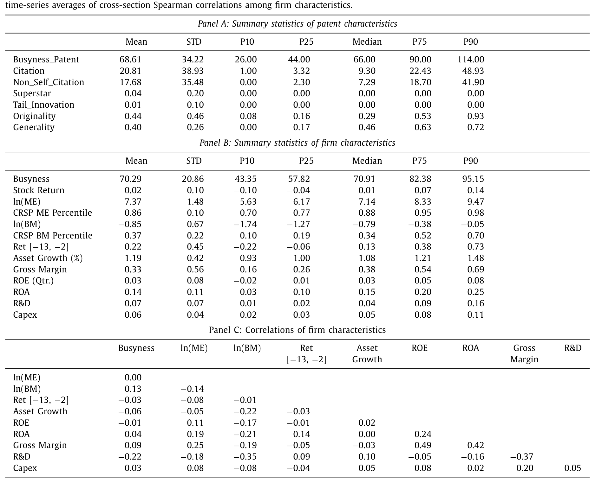
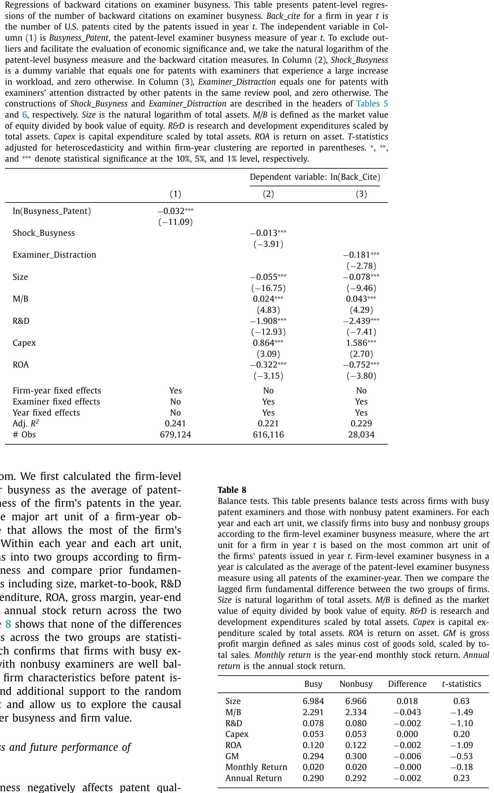
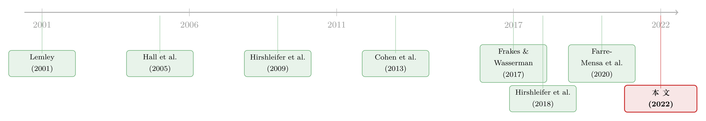

把「忙」写进专利，再写进股价：一个被审查员的时间表掀开的因果链
本文读的是 Shu, Tian & Zhan (2022, JFE)：美国专利商标局（USPTO）审查员一旦「太忙」，他批出的专利质量就系统性地变差；而股市对这件事反应不足——那些专利由忙碌审查员放行的公司，未来股票收益显著偏低，六因子 alpha 的多空价差高达每月 0.90%（t = 4.44）。一条从「审查员的时间表」到「专利质量」再到「公司价值与股价」的因果链，被一个谁也没想到的工具掀开了。
1 一个老问题，和它身上的两道裂缝
先抛一个看似已被回答的老问题：专利质量到底值不值钱？
直觉上当然值钱。Hall, Jaffe & Trajtenberg (2005) 早就用专利引用数（patent citations）量过：一项专利每多被引用一次，公司市值大约上升 3%。这个数字漂亮、被引无数次，几乎成了「创新有价」的标准答案。
但如果你把这个回答凑近了看，会发现它身上有两道裂缝。
第一道裂缝：引用数是「向前看」的。一项专利能被引多少次，要等它问世之后好几年才知道。用一个事后才能观测的变量去解释当下的公司价值，因果方向天然就拧着——到底是高质量推高了市值，还是市值高的公司本就更容易产出会被反复引用的专利？
第二道裂缝，也是更要命的一道：遗漏变量。一家公司的专利质量从来不是天上掉下来的，它由公司的研发投入、人才、行业、治理……一长串东西共同决定。而这些东西本身又都直接影响公司价值。于是「质量高 → 市值高」这条线，随时可能是某个看不见的第三者（比如「这家公司就是强」）在背后同时拽着两头。
这就是实证公司金融里一个反复出现的窘境：你想识别 A → B，但凡是能推高 A 的东西，往往也在偷偷推高 B。 专利质量与公司价值，正是这样一对「同根生」的变量。
要砍断这两道裂缝，你需要一个东西：一个只动专利质量、却跟公司基本面无关的外生冲击。本文作者找到的那把刀，藏在一个最不起眼的地方——审查员有多忙。
2 为什么是「审查员的忙碌」
接着，一个自然的问题是：审查员的忙碌，凭什么算外生？
先看制度。一份专利申请递到 USPTO，会按技术领域被分到某个技术单元 (art unit)，每个单元平均 8 到 15 名审查员，由一位主管审查员（SPE）把申请随机派给单元内的某位审查员——依据是审查员当前的工作量、申请号的末位数字，或者「先到先审」。无论哪一种，选谁来审，申请人都管不着，也跟申请本身的质量、跟公司基本面无关（Lemley & Sampat, 2012；Farre-Mensa et al., 2020 都给出了随机分派的证据）。
再看「忙」意味着什么。审查员面对的是极紧的时间约束：平均每份申请，从头到尾只摊得到约 18 小时（Allison & Lemley, 2000）。更关键的是绩效考核的结构——产量（office action 数量）占 35%、进度管理占 20%，加起来 55% 是「快」；而工作质量只占 35%。数量好量、质量难量。于是 Glassdoor 上 USPTO 员工吐槽最多的两条「cons」，都指向同一件事：为了完成产量指标而疲于奔命。 一位审查员的原话是：「与其做我认为最正确的事，我其实是在为自己的饭碗拼命。」
这正是把「忙碌」选作工具的精妙之处：它接上了金融学里一条成熟的脉络——分心的经济主体干活更糙。忙碌的董事监督更差（Fich & Shivdasani, 2006）、分心的机构投资者更不尽责（Kempf, Manconi & Spalt, 2017）。本文把这套逻辑搬到了专利审查员身上。
作者对一项专利的审查员忙碌度 (examiner busyness) 的定义朴素得近乎粗暴：在该专利的获批年份里，这位审查员一共批出了多少项专利。
$$ \textit{Busyness}_{i} = \#\{\text{patents issued by patent } i\text{'s examiner in the issuance year of } i\} $$
批得越多，越忙。这个度量在审查员之间相当分散：某一年忙碌度的 90 分位数普遍在 100 件以上，10 分位数却只有 40 件左右。
但这里立刻冒出一个尖锐的质疑——「忙」会不会只是「松」的另一张脸？ 一个审查员批得多，可能不是因为忙，而是因为他宽松 (lenient)，来者不拒。Frakes & Wasserman (2017a) 确实发现，越忙的审查员越宽松，两者正相关。
作者的回应是掏出一份专有数据：LexisNexis PatentAdvisor® 里的审查员「office action」记录，据此构造一个事实忙碌度 (de facto busyness)——某审查员在该年里处理过 office action 的申请总数，既含获批、也含被拒的申请。这个度量跟「批出数量」的相关性高达 0.74；而且在显式控制了审查员宽松度之后，主结论依然成立。换句话说，「忙」不是「松」的马甲。
3 第一环：忙碌如何啃掉专利质量
链条的第一环，是把「忙碌 → 质量下降」坐实。
作者用了一整套专利质量度量，分两大类。引用类：未来引用数、剔除自引的未来引用数、是否由「超级明星」发明人（按人均引用排进前 5%）发明、是否属于「尾部创新 (tail innovation)」（未来引用排进前 1%）、专利的原创性 (originality) 与通用性 (generality) 得分。诉讼类：基于一个朴素但有力的逻辑——只有质量够硬的专利，公司才舍得为它打那场昂贵又复杂的侵权官司（Lanjouw & Schankerman, 2001），所以未来被卷入诉讼的概率与次数，本身就是质量的代理。
样本很大：USPTO 1981–2010 年全部专利，374 万项、逾 1.1 万名审查员；落到上市公司、剔除 5 美元以下及市值低于 NYSE 20 分位的微盘股（Fama & French, 2008）后，是 4,176 家美国上市公司、699,475 项专利。
关键的回归设计在于固定效应：在专利层面回归，控制公司×年 (firm-year) 固定效应——这等于把比较限制在「同一家公司、同一年内」的专利之间。于是公司层面所有看得见看不见的东西（研发、行业、治理、运气）都被吸收掉了，剩下的只是同一批专利里，谁恰好碰上了更忙的审查员。
结果一边倒：忙碌审查员放行的专利，未来引用更少（无论总引用还是非自引）、更不可能出自超级明星之手、更不可能成为尾部创新、原创性和通用性得分都更低。诉讼维度同样成立——忙碌度与未来诉讼的概率和次数显著负相关；甚至在一个仅 189 例、由 PTAB 审理的小样本里，忙碌度还显著正向预测专利被判无效。

Table 2
但作者没有就此收手。「公司基本面无关」已经买了一层保险，他们还想直接看到因果，于是补了两记识别拳：
第一拳，时间序列内变动。 控制审查员固定效应，只看同一个审查员在工作量陡增的年份里——他批的专利质量是否随之恶化。答案是肯定的，引用类和诉讼类度量一致变差。这一招把「不同审查员本就有能力差异」也排除了。
第二拳，注意力的再分配。 借鉴 Kempf et al. (2017)，作者把「某审查员手里别的在审专利所属公司发生大幅股价暴跌」当作一个抢夺注意力的外生事件——这会把审查员的精力从同池子里没有暴跌的那些专利上分走。结果：被「分心」的专利，质量显著低于得到充分注意的专利。这一步几乎是把「注意力」这个机制直接拍在了桌上。
注意这两拳的递进：第一拳排除审查员异质性，第二拳排除「忙是因为难审的案子扎堆」这类反向解释——分心事件来自别的公司的股价，跟焦点专利八竿子打不着。识别就是这样一层层焊死的。
4 反转：股市没把这件事算进价格
到这里，链条的前半段——「忙碌 → 低质量 → 低公司价值（更低的未来 ROA 与利润率）」——已经成立。但真正让这篇论文从一篇「创新经济学」论文跳进资产定价的，是下面这个反转。
如果质量正向决定价值，而投资者对专利质量这种复杂信息反应不足（Hirshleifer, Lim & Teoh, 2009 的「分心」机制，Cohen, Diether & Malloy, 2013 的「误定价创新」），那么质量的坏消息就不会被立刻打进股价，而是慢慢渗出——表现为未来收益的可预测性。
作者把专利层面的忙碌度按公司聚合：一家公司某年所有获批专利的忙碌度取平均，作为公司层面忙碌度。然后做最经典的组合排序：每年 7 月到次年 6 月，按 t-1 年的忙碌度把公司分成五组，算市值加权的组合收益，并刻意留出 6 个月间隔，确保信息早已公开扩散。
结果干净得惊人。组合收益随忙碌度单调递减，无论用原始收益、Fama-French 三因子 alpha、Carhart 四因子 alpha，还是 Fama & French (2018) 五因子加动量的六因子 alpha，都成立。以六因子 alpha 为例：
- 忙碌度最低组：
+0.63%每月（t = 4.50） - 忙碌度最高组：
−0.28%每月（t = −2.27） - 多空价差：
0.90%每月（t = 4.44）

Table 7
这里有一个反常、也最值得玩味的细节：与绝大多数股市异象相反，这条多空收益的大头来自多头（低忙碌组）而非空头。多数异象的超额收益其实藏在「难做空、成本高」的空头腿里，常被诟病为不可实现；而本文样本已剔除微盘股（成份股平均市值在 CRSP 全样本的 86 分位），收益又主要来自多头，正好躲开了「异象都是小盘股驱动」这条经典批评。
排序之外，作者还跑了 Fama-MacBeth 回归，控制规模、账面市值比、动量、短期反转、资产增长、盈利能力、行业固定效应，并额外控制公司当年的专利总数（剥离整体专利活跃度）。忙碌度系数在 1% 水平上显著为负；进一步加入技术单元 (art unit) 固定效应的面板回归里，结论依旧。
为什么说这是「反应不足」而不是「风险补偿」？两条旁证。其一，作者把长期收益拉长看：负向关系持续约三年，且不发生反转——若是风险溢价，不该有这种「迟到但不回头」的渗出形态；这正是信息被缓慢消化的样子。其二，截面上，这条负向关系在创新更重要（高研发、产品市场威胁更大）以及投资者注意力更受限的子样本里显著更强。信息越复杂、越没人看，反应不足就越严重——这与机制完全自洽。
关于「被同一群股东持有反而让信息扩散更慢」的另一种反应不足，可参见《被「同一批股东」拖慢的消息》；而关于专利质量在另一种制度场景下如何被定价，可参见《谁的专利，配得上新标准？》。
最后，作者还顺手回答了「什么能缓解忙碌的伤害」：他们从 LinkedIn 手工扒了审查员的履历。经验能显著削弱忙碌的负效应（老手扛得住），但年龄反而加剧；学历层次与专业则没有实质影响。此外，忙碌的负效应在审查池更集中（行业、技术或地理）以及技术更复杂的专利上更强——复杂的活儿本就更吃精力（Frakes & Wasserman, 2017a）。
5 文献脉络
把这篇论文放回它的来路，你会看到两条河在这里交汇。
一条河来自「专利质量与价值」。 源头是 Hall et al. (2005)，用引用数把创新与市值挂上钩；但正如开篇所说，这条河始终趟不过因果与遗漏变量两道险滩。法学界很早就独立发现了「时间约束伤害质量」（Lemley, 2001），Frakes & Wasserman (2017a) 用「同一发明能否在欧洲/日本获批」做质量代理，证明缩短审查时间会降低专利质量——这为本文的核心工具提供了制度地基。
另一条河来自「投资者反应不足」。 Hirshleifer, Lim & Teoh (2009) 立下「分心导致对盈余反应不足」的范式；Cohen, Diether & Malloy (2013) 指出市场会「误定价创新」；Hirshleifer, Hsu & Li (2018) 发现高原创性专利的公司未来收益更高，Fitzgerald et al. (2021) 发现探索型专利正向预测收益。这条河缺的，恰恰是一个不向前看、又外生于公司基本面的质量度量。

而最近兴起的「专利审查员」研究——Farre-Mensa et al. (2020) 的「专利彩票」、Feng & Jaravel (2020) 的审查员固定效应——把审查员这个长期被忽视的角色推到台前。本文站在两条河的汇口：它用审查员忙碌度这个既外生、又非向前看的工具，同时喂饱了两条文献——既识别了「质量 → 价值」的因果，又为「投资者对创新反应不足」添了一块干净的实证拼图。
6 评论与延伸（Q&A + 研究方向）
(a) 几个可能的疑问
Q：「忙碌」和「宽松」真的能分开吗？这是全篇的命门。
这是最致命的质疑，作者用三道防线回应：一是构造含「被拒申请」的事实忙碌度，与批出数量相关性 0.74，说明「忙」不只是「来者不拒」；二是按
Farre-Mensa et al. (2020)构造宽松度并直接控制；三是构造正交于宽松度的残差忙碌度，它仍显著负向预测收益。三道防线都指向：驱动结果的是忙碌，不是宽松。
Q：用「获批年份」的忙碌度，而不是整个审查期的忙碌度，会不会测错了？
作者特意讨论过。若用「申请到获批整个审查期」的批出数衡量忙碌，会有个陷阱：越忙的审查员审得越快、审查期越短，反而可能算出更低的忙碌值，把度量弄反。用获批当年的忙碌度更稳健；即便审查期内忙碌度剧烈变化引入噪声，那也是朝着零的衰减偏误，只会让结果更难显著，而非制造假阳性。
Q：收益可预测，凭什么是「反应不足」而不是某种没被模型捕捉的风险？
三条证据指向反应不足：负效应持续三年且无反转（风险补偿不该这样迟到又不回头）；它在投资者注意力更受限、创新更重要的子样本里更强（风险故事难解释这种异质性）；且收益已用六因子调整过。当然，「反应不足」与「未知风险」在哲学上永远无法被一个检验彻底分清，这是所有异象研究共有的软肋。
Q：为什么多头腿贡献了大部分收益？这难道不奇怪吗？
确实与多数异象相反，但它反而是个好消息：异象常被批评「收益全在难做空的空头腿、不可实现」，本文收益主要来自可买入的多头（低忙碌组），且已剔除微盘股，因此更经得起「异象都是小盘垃圾股」的诘问。代价是，这也削弱了「套利受限导致误定价持续」的标准解释——为什么人们不直接买多头？答案大概仍是反应不足本身：没人注意到这条信息。
Q：审查员随机分派，是制度白纸黑字的规定吗？
不是硬性法规，而是基于工作量、申请号末位、先到先服务等操作惯例，外加多篇基于访谈与调查的实证支持（
Lemley & Sampat, 2012；Farre-Mensa et al., 2020）。这是一种「事实上的随机」，强于纯观测，但弱于实验室随机化——读者需要对这层制度细节有信心，识别才立得住。
Q：忙碌度是公开信息，投资者真的看得到吗？
看得到。USPTO 每周在 Official Gazette 公告专利获批，且公告含审查员信息。所以
t-1年的忙碌度从该年底起就是公开可得的；作者还刻意留 6 个月间隔。信息是公开的，可没人去算、去用——这恰恰是「反应不足」成立的前提，而非漏洞。
(b) 几个可能的研究问题与提案
1. 审查员忙碌度 → 信用市场。 【经济故事】本文只看了股票。但专利质量直接影响公司的无形资产抵押价值与违约风险——忙碌审查员放行的「水货」专利，理论上会抬高发债成本、压低评级。若债市同样反应不足，公司债利差应在专利获批后缓慢走阔。 【可行性】高。把公司层面忙碌度并到 TRACE 公司债交易与 Mergent FISD 发行数据上，做利差对忙碌度的预测回归，识别沿用本文的随机分派+公司×年固定效应即可。数据现成，是本文最自然的延伸。
2. 外资持有人是否更易「漏看」专利信息？ 【经济故事】专利审查员忙碌度是高度本地化、需要解读 USPTO 制度细节的信息。外国机构投资者在信息处理上常处劣势，理论上对这类「本地复杂信息」的反应不足应更严重。 【可行性】中。用 FactSet/13F 拆分外资与本土持股比例，检验忙碌度的收益可预测性是否在外资持股更高的公司里更强。难点是外资持股本身与公司规模、ADR 等内生相关，需要额外控制或工具。
3. 忙碌冲击与专利的二级市场流动性。 【经济故事】若忙碌降低专利质量，这些专利在专利交易/转让市场（patent reassignment）上是否更难脱手、折价更深？这能把「质量」从引用、诉讼之外，再用一个市场价格维度验证。 【可行性】中。USPTO patent assignment 数据库可识别专利转让，但缺成交价格，需借助 NPE/专利拍卖等另类数据估算折价，识别可沿用本文工具。
4. AI 辅助审查能否「解忙」？ 【经济故事】近年 USPTO 推进检索与审查的算法辅助。若忙碌的危害来自时间约束，那么 AI 工具的引入应在最忙的审查员身上带来最大的质量回升——这是一个潜在的双重差分设计。 【可行性】中偏低。需要 AI 工具上线的精确时间与覆盖范围（按技术单元分批推广最理想），数据可得性是主要障碍；一旦拿到，识别会很干净。
7 参考文献与我的判断
我的判断。 这篇论文最漂亮的地方，是用一个单一工具同时解决了两个本不相干的难题：它既给「专利质量 → 公司价值」这条老命题提供了一个不向前看、又外生于基本面的识别，又给「投资者对创新反应不足」补上了一块罕见地以多头为主、且不受微盘股污染的证据。0.90%/月、t=4.44 的多空价差，量级扎实，三年无反转的形态也与机制自洽。两记额外的识别拳（审查员固定效应下的工作量陡增、来自他人股价暴跌的注意力分心）显示出作者对「忙=松」「忙=难案扎堆」这些替代解释的高度警觉。
对识别的担忧，我有两点。 其一，随机分派是「事实上的」，依赖访谈与惯例而非强制规定；若某些技术单元存在系统性的「难案派给老手」之类的潜规则，工具的外生性会被侵蚀——作者的审查员固定效应缓解了这点，但没法完全证伪。其二，「反应不足」与「未被定价的风险」的区分，终究是间接的；三年无反转是强证据，但不是铁证。我更想看到的后续，是把这条链子拉到信用市场去——如果忙碌审查员的专利同样让公司债利差缓慢走阔，那「专利质量是公司价值的重要驱动」这个核心论断，就会从股权一端被独立地再确认一次。
参考文献
- Allison, J.R., & Lemley, M.A. (2000). Who's patenting what? An empirical exploration of patent prosecution. Vanderbilt Law Review 53, 2099–2174.
- Cohen, L., Diether, K., & Malloy, C. (2013). Misvaluing innovation. Review of Financial Studies 26(3), 635–666.
- Fama, E.F., & French, K.R. (2008). Dissecting anomalies. Journal of Finance 63(4), 1653–1678.
- Fama, E.F., & French, K.R. (2018). Choosing factors. Journal of Financial Economics 128(2), 234–252.
- Farre-Mensa, J., Hegde, D., & Ljungqvist, A. (2020). What is a patent worth? Evidence from the U.S. patent "lottery." Journal of Finance 75(2), 639–682.
- Feng, J., & Jaravel, X. (2020). Crafting intellectual property rights: Implications for patent assertion entities, litigation, and innovation. American Economic Journal: Applied Economics 12(1), 140–181.
- Fich, E.M., & Shivdasani, A. (2006). Are busy boards effective monitors? Journal of Finance 61(2), 689–724.
- Fitzgerald, T., Balsmeier, B., Fleming, L., & Manso, G. (2021). Innovation search strategy and predictable returns. Management Science 67(2), 1109–1137.
- Frakes, M.D., & Wasserman, M.F. (2017a). Is the time allocated to review patent applications inducing examiners to grant invalid patents? Evidence from microlevel application data. Review of Economics and Statistics 99(3), 550–563.
- Hall, B.H., Jaffe, A.B., & Trajtenberg, M. (2005). Market value and patent citations. RAND Journal of Economics 36(1), 16–38.
- Hirshleifer, D., Hsu, P., & Li, D. (2018). Innovative originality, profitability, and stock returns. Review of Financial Studies 31(7), 2553–2605.
- Hirshleifer, D., Lim, S., & Teoh, S. (2009). Driven to distraction: Extraneous events and underreaction to earnings news. Journal of Finance 64(5), 2289–2325.
- Kempf, E., Manconi, A., & Spalt, O. (2017). Distracted shareholders and corporate actions. Review of Financial Studies 30(5), 1660–1695.
- Lanjouw, J.O., & Schankerman, M. (2001). Characteristics of patent litigation: A window on competition. RAND Journal of Economics 32(1), 129–151.
- Lemley, M.A. (2001). Rational ignorance at the patent office. Northwestern University Law Review 95(4), 1495–1532.
- Lemley, M.A., & Sampat, B. (2012). Examiner characteristics and patent office outcomes. Review of Economics and Statistics 94(3), 817–827.